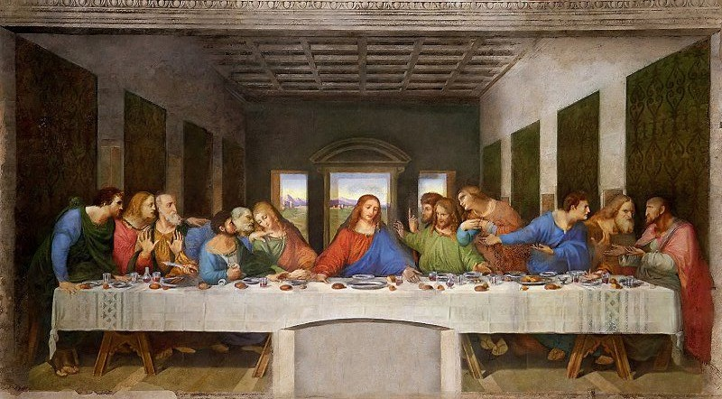
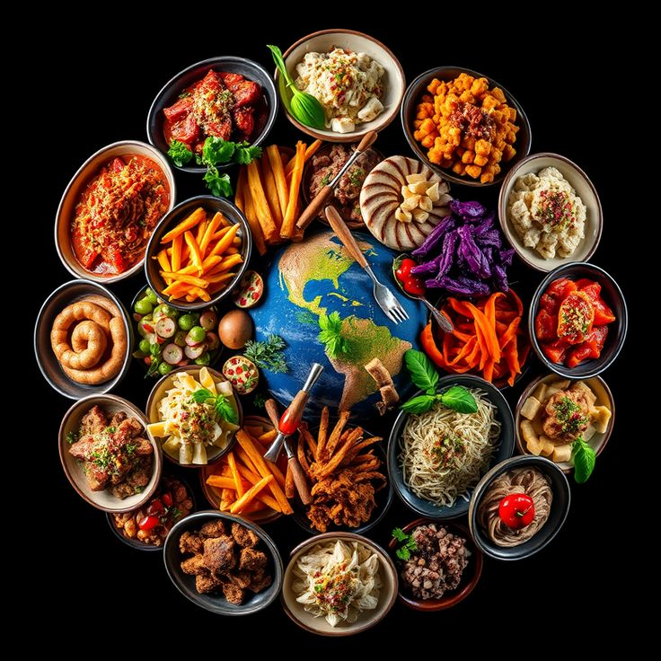

Yazılar
En yeni yazılarımızı keşfedin ve ilham alın.
Seyahat
Gezdiğimiz yerlerden ilham alın ve yeni rotalar keşfedin.
Show
Gösteri ve etkinliklere dair içerikler burada.

Sanat
Sanatın farklı dallarını keşfet ve ilham al!

Yemekler
Dünya mutfağından lezzetli tarifler ve yemek önerileri burada.
Spor
Sağlıklı yaşam ve sporla ilgili motivasyon dolu içerikler.
Kitaplar
Filmler
Filmler yükleniyor...
Diğer
İçerikler yükleniyor...